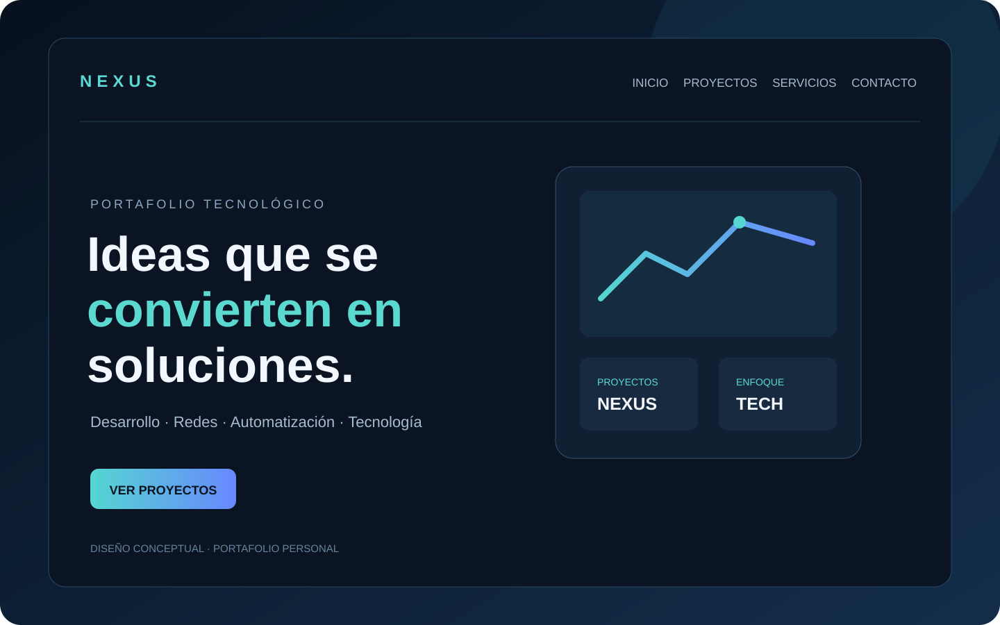

Desarrollo web
Sitios web modernos, adaptables y enfocados en presentar tu marca, servicio o producto con claridad.
Consultar servicio ↗IDEAS, TECNOLOGÍA Y CONEXIONES.
 01 / NEXUS DIGITAL
++
01 / NEXUS DIGITAL
++
Un espacio para conectar ideas con tecnología: proyectos digitales, desarrollo, automatización y exploración tecnológica.
EXPLORAR PROYECTOS01 / QUIÉNES SOMOS
NEXUS es mi identidad digital y portafolio tecnológico. Aquí presento proyectos propios, herramientas en desarrollo y aprendizajes que documento mientras sigo creciendo en el área de tecnología.
Conversemos sobre tu proyecto02 / LO QUE HACEMOS
Estas son áreas que exploro y en las que desarrollo proyectos. El alcance y las capacidades de cada herramienta se describen en su documentación.
Sitios web modernos, adaptables y enfocados en presentar tu marca, servicio o producto con claridad.
Consultar servicio ↗Integraciones y flujos asistidos por IA para explorar nuevas formas de atender, crear y organizar.
Consultar servicio ↗Procesos digitales que ayudan a reducir tareas repetitivas y conectar las herramientas que utilizas.
Consultar servicio ↗Organización y visualización de información para entender mejor lo que ocurre en tu operación.
Consultar servicio ↗Experiencias de catálogo y venta digital pensadas para que tus clientes encuentren lo que buscan.
Consultar servicio ↗Orientación y soluciones técnicas para mejorar la organización, la protección y la continuidad digital.
Consultar servicio ↗03 / PROYECTOS DESTACADOS
Cada ficha enlaza al código y a la documentación. Revisa los requisitos y el estado de cada proyecto antes de instalarlo.
 PLATAFORMA WEB
PLATAFORMA WEB
REACT · TYPESCRIPT · SUPABASE
Plataforma web comunitaria para explorar y compartir guías, tutoriales y recursos tecnológicos. Se utiliza desde el navegador; no necesitas instalar nada. Algunas funciones dependen de los servicios de la plataforma.
 HERRAMIENTA WINDOWS
HERRAMIENTA WINDOWS
PYTHON · FLASK · PSUTIL
Prototipo local para revisar almacenamiento, localizar archivos grandes y evaluar opciones temporales antes de decidir qué hacer.

PORTAFOLIOHTML · CSS · JAVASCRIPT
Mi sitio personal para presentar proyectos, habilidades técnicas y vías de contacto.
04 / MI PROCESO
Un proceso sencillo, transparente y enfocado en lo que necesitas.
Conocemos tu objetivo, el problema que quieres resolver y las prioridades del proyecto.
Te presentamos un alcance, una ruta de trabajo y una propuesta antes de comenzar.
Desarrollamos la solución por etapas y mantenemos la comunicación durante el proceso.
Revisamos el resultado y conversamos sobre los siguientes pasos cuando sea necesario.
05 / CONTACTO
Cuéntame qué tienes en mente. Puedes revisar el mensaje antes de enviarlo por WhatsApp.